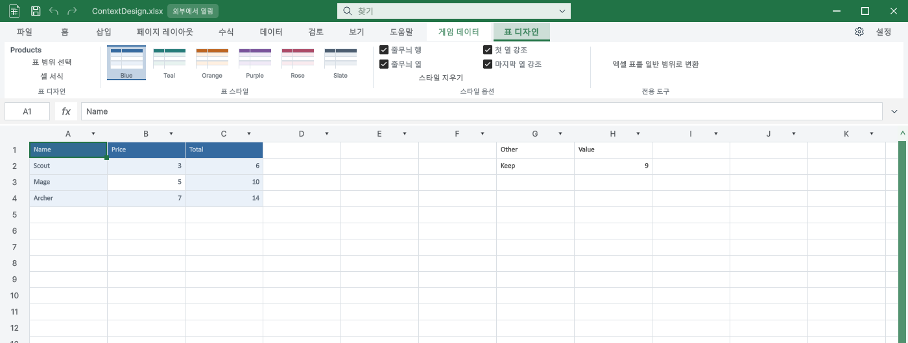
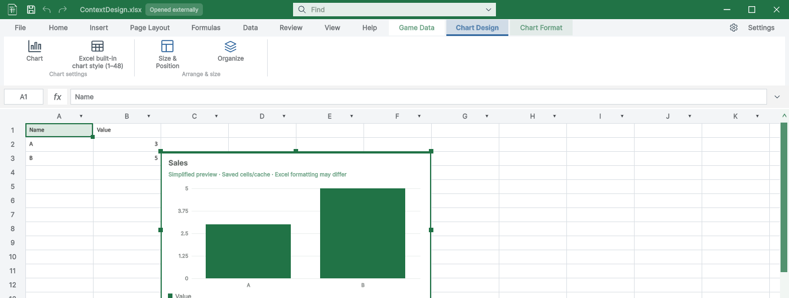
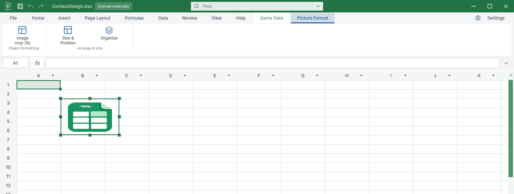

Tracefolio REPORTS & ISSUES
Tracefolio REPORTS & ISSUESTurnRoom 표·도형·차트·그림 전용 디자인 탭
부분 완료표 스타일 6개와 옵션, 자동 활성 탭, 차트 디자인·서식 분리 및 개체 도구 그룹을 구현했습니다. 기존 복원 가이드 이미지 1장은 검증 대기입니다.
작업 결과
요청 기능의 구현과 실제 Unity 실행 검증은 완료했습니다. TurnRoom/Assets/TurnRoom/DesignDataTable에 적용했습니다.



변경 내용
적용 내용
표 안으로 진입하면 표 디자인이 자동 활성화되고, 표 밖에서는 숨겨집니다. 같은 표에서 사용자가 홈을 선택하면 강제로 되돌리지 않습니다. 표 스타일 6개, 행·열 줄무늬, 첫·마지막 열 강조, 스타일 지우기를 XLSX 표 메타데이터로 저장합니다. 값과 수식 및 다른 표는 유지합니다. 도형은 채우기·윤곽선·텍스트와 배치, 그림은 자르기·크기·배치로 구분했습니다. 차트는 디자인(설정·기본 스타일 1–48)과 서식(계열 색·크기·배치)으로 나눴습니다. 기존 공통 아이콘을 재사용했고, 별도 장식 이미지를 만들지 않았습니다. PROJECT-MAP.md에 현재 TurnRoom 통합 위치를 반영했습니다.
검증
Unity 6000.0.83f1 분리 프로젝트에서 신규 49개 통과: 6개 프리셋 XML·실제 색상, 수식·다른 표 보존, 옵션 Undo/Redo, 저장·재열기, 실제 스타일 버튼 클릭, 입력 초안 보존, 실제 도형·차트·그림 클릭. 표 갤러리 9개 언어를 실제 렌더했습니다. Play 잠금 33개 통과. 문서 게임 4개 실제 Play 재촬영. 실제 화면 39개를 새로 게시했습니다. 전체 빌드 오류 0. 기존 Templete XML 주석 경고 8개는 별도 기존 경고로 남았습니다. 이미지는 무손실 WebP로 압축 전후 바이트·크기·픽셀 동일성을 확인했습니다. 원본과 첫 QA 실패 증거는 로컬에 보존했습니다. 전체 가이드 해시 검사는 기존 공통 복원 이미지 1장의 오래된 소스 해시로 실패했습니다. 이를 통과로 보고하지 않습니다. 세부 한글 TC: Docs/Testing/2026-10-30/context-design/TC-결과.md.
남은 사항
이번 표·개체 탭과 별개인 기존 guide-window-restore.png 1장은 실제 복원 장면을 재촬영하지 않아 현재 UI 미검증입니다. 복원 경로의 Focus 호출이 있는 GUI 장면을 이번 비간섭 캡처로 재현했다고 주장하지 않습니다. 따라서 전체 문서 QA와 작업 메뉴얼은 완료 처리하지 않았습니다. 코드 커밋·푸시는 이번 요청 범위에서 수행하지 않았습니다. 교훈 검토: 전역 지침 변경 없음. 경로 확인·검증·공개 범위 규칙과 중복되므로 추가하지 않았고, 프로젝트 통합 경로 사실은 PROJECT-MAP.md에 기록했습니다.
작업 시간
- 제안 시간: 20–35분
- 실제로 완료된 시간: 31분 51초 · 2026-10-30 23:24:40 KST (구현·실행 검증 완료, 기존 복원 이미지 재촬영은 미완료)
- XERJ: 사용 — TurnRoom XERJ 상태와 contextual table design ribbon 검색으로 정의 파일을 찾고 현재 소스와 대조했습니다. 세부 API·문서 범위는 rg로 보완했습니다.